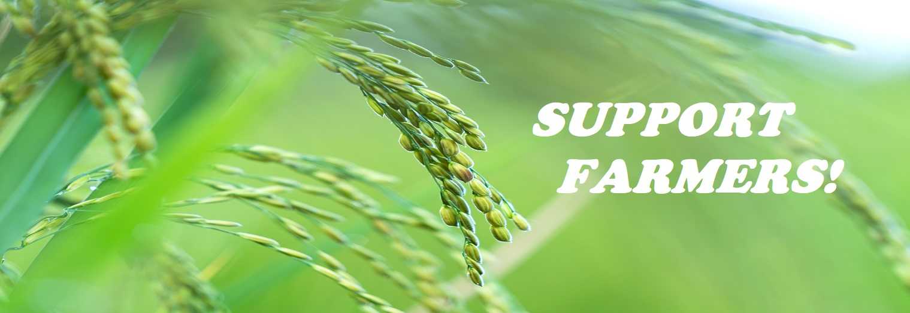

Modern farms and agricultural operations work far differently than those a few decades ago, primarily because of advancements in technology, including sensors, devices, machines, and information technology. Today’s agriculture routinely uses sophisticated technologies such as robots, temperature and moisture sensors, aerial images, and GPS technology. These advanced devices and precision agriculture and robotic systems allow businesses to be more profitable, efficient, safer, and more environmentally friendly.
Importance of Agricultural Technology
Farmers no longer have to apply water, fertilizers, and pesticides uniformly across entire fields. Instead, they can use the minimum quantities required and target very specific areas, or even treat individual plants differently. Benefits include:
Higher crop productivity
Decreased use of water, fertilizer, and pesticides, which in turn keeps food prices down
Reduced impact on natural ecosystems
Less runoff of chemicals into rivers and groundwater
Increased worker safety
In addition, robotic technologies enable more reliable monitoring and management of natural resources, such as air and water quality. It also gives producers greater control over plant and animal production, processing, distribution, and storage, which results in:
Greater efficiencies and lower prices
Safer growing conditions and safer foods
Reduced environmental and ecological impact
NIFA’s Impact
NIFA advances agricultural technology and ensures that the nation’s agricultural industries are able to utilize it by supporting:
Basic research and development in physical sciences, engineering, and computer sciences
Development of agricultural devices, sensors, and systems
Applied research that assesses how to employ technologies economically and with minimal disruption to existing practices
Assistance and instruction to farmers on how to use new technologies
Let's continue the shopping.
Shop now
>

©Copyright Disclamier